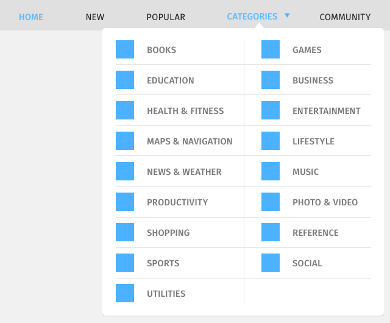
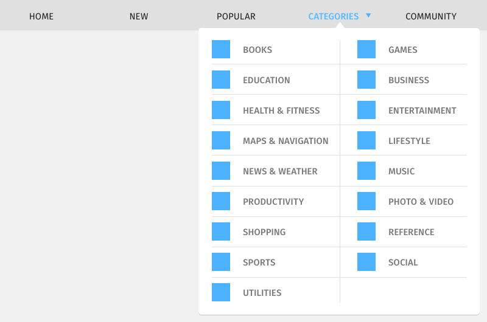
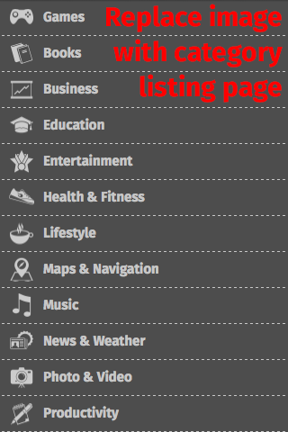
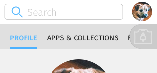
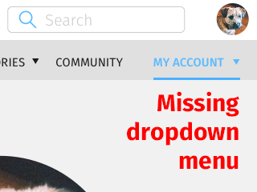
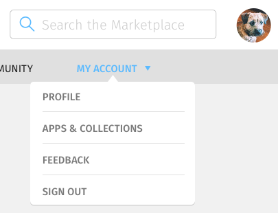

<div class="container">
	<div class="row">
		<div class="col-sm-12 col-md-12 col-lg-12">
			<h1>Navigation</h1>
				
				
				
				
				
				<p class="longText">The navigation of the Marketplace contains the main sections of the Marketplace app:</p>
				
        <ol class="longText">
          <li>Home</li>
          <li>New</li>
          <li>Popular</li>
          <li>Categories</li>
          <li>Community</li>
          <li>My Account (not visible, because user is not logged in)</li>
			  </ol>
			  
			  
			  
			  
			  <p class="longText">In tablet and desktop layouts, the Categories menu contains a sub-menu with entries for each category in the Marketplace.</p>
			  
			  
			  
			  <p class="longText">In mobile layout, selecting the Categories menu will take user to a separate page with entries for each category in the Marketplace.</p>

        
        
        

			  <p class="longText">The My Account menu is only visible when a user is logged in. Logging in is indicated by the presence of avatar on the top-right corner.</p>
			  
			  <p class="longText">It contains the sub-menu with entries:</p>
			  
			  <ol>
			    <li>Profile</li>
			    <li>Apps & Collections</li>
			    <li>Feedback</li>
			    <li>Sign Out</li>
			  </ol>
			  
			  <h3 class="specItem">Mobile</h3>
			  
			  
			  
			  <p class="longText warning">Put circled letters where relevant.</p>
			  
			  <ol class="longText letters">
  			  <li>The menu is a scrollable horizontal menu with magnetic links. That is, the selection snaps to the next item in the list as the user scrolls.) under the app's header.</li>
  			  <li>The current location of the user in the hierarchy is indicated by the underline that is a fixed point on the left side of the menu.</li>
  			  <li>The settings submenu is available by tapping the settings button on the left side of the menu.</li>
  			  <li>Tapping the Marketplace button on the right side of the settings menu brings the user back to the main menu.</li>
  			  <li><a href="http://people.mozilla.org/~asantos/feedPrototypes/navPrototypeMarch2014/mobile_feed_nav_changes.html">Example of the menu behaviour</a></li>
			  </ol>
			  
			  <h3 class="specItem">Tablet</h3>
			  
			  
			  
			  <p class="longText warning">Put circled letters where relevant.</p>
			  
			  <ol class="longText letters">
			    <li>The menu is a fixed horizontal list under the app's header.</li>
			    <li>The current location of the user in the hierarchy is indicated by the underline that moves from menu item to menu item.</li>
			  </ol>
			  
			  <h3 class="specItem">Desktop</h3>
			  
			  
			  
			  <p class="longText warning">Put circled letters where relevant.</p>
			  
			  <p class="longText">Identical to tablet.</p>
			  
		</div>
	</div>
	<!-- Pagination. If you have more than one page, set the multipage variable in the Frontmatter to true. Editing the pagination code happens in /_includes/homePagination.html.
		NOTE: This is currently broken in the Jekyll ver of this template.
		-->
		{% if page.multipage %}
			{% include homePagination.html %}
		{% endif %}
